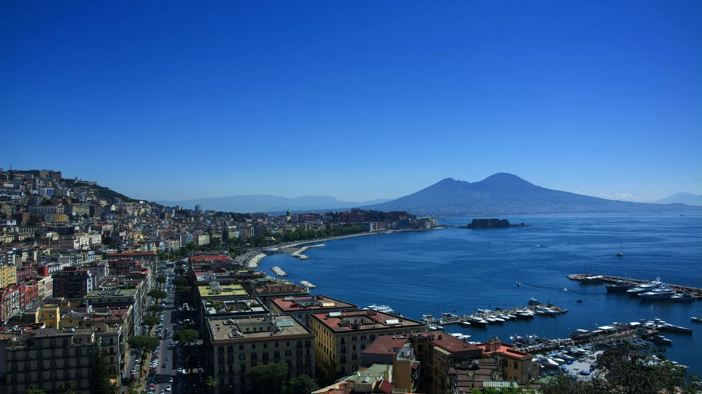

In breve
Napoli è rumorosa, caotica e una delle città che danno di più in Italia: un centro storico patrimonio UNESCO, la pizza migliore del mondo, una città sotterranea e, a 35 minuti di treno, Pompei. Tre giorni sono il tempo giusto: due per la città, uno per Pompei. Dormi nel centro storico o vicino a Via Toledo, muoviti a piedi e prenota il Cristo Velato prima di partire.
Dove dormire a Napoli
- Centro storico (Spaccanapoli, Via dei Tribunali): la scelta migliore per la prima volta. Sei a piedi dalle pizzerie, da Sansevero, dal Duomo e da Napoli Sotterranea. Le vie sono vivaci e rumorose: chiedi una camera sul cortile.
- Via Toledo e Quartieri Spagnoli: centrali, tra il centro antico e il mare, con due fermate della metro linea 1 (Toledo e Dante). Molto vivaci la sera.
- Chiaia e il Lungomare: più eleganti e tranquilli, con vista sul golfo e su Castel dell'Ovo. A 15–20 minuti a piedi dal centro storico.
- Vomero: residenziale, calmo, in collina, si sale con la funicolare. Buono per le famiglie, meno atmosfera la sera.
- Vicino a Napoli Centrale (Piazza Garibaldi): comodo per i treni presto e per Pompei, ma la sera è la zona meno piacevole. Va bene per una notte, non per tutto il soggiorno.
Confronta gli hotel a Napoli per le tue date: a gennaio i prezzi sono tra i più bassi dell'anno.
Cosa vedere
- Spaccanapoli e Via dei Tribunali: le due lunghe vie dritte della città greca, piene di chiese, botteghe e pizzerie. Basta camminare.
- Cappella Sansevero e il Cristo Velato: il Cristo di marmo di Giuseppe Sanmartino sotto un velo trasparente è la scultura più famosa di Napoli. La prenotazione è obbligatoria, il martedì è chiuso e dentro non si possono fare foto.
- San Gregorio Armeno: la via delle botteghe dei presepi, aperta tutto l'anno, più piena da novembre a inizio gennaio.
- Museo Archeologico Nazionale (MANN): mosaici, affreschi e statue di Pompei ed Ercolano. Vederlo prima di Pompei rende gli scavi molto più chiari. Chiuso il martedì.
- Napoli Sotterranea: gallerie e cisterne greco-romane a 40 metri sotto il centro storico, con visita guidata.
- Duomo e Tesoro di San Gennaro, il patrono della città.
- Piazza del Plebiscito, Palazzo Reale e Galleria Umberto I, poi il Lungomare fino a Castel dell'Ovo al tramonto.
- Stazione Toledo della metro: spesso definita una delle più belle d'Europa. Basta un biglietto della metro.
- Vomero e Castel Sant'Elmo: sali con la funicolare per la vista più bella sul golfo e sul Vesuvio.
Napoli in 3 giorni
| Giorno | Mattina | Pomeriggio e sera |
|---|---|---|
| 1 · Centro storico | Spaccanapoli, Sansevero (prenotato), San Gregorio Armeno | Duomo, Napoli Sotterranea, pizza in Via dei Tribunali |
| 2 · Pompei | Circumvesuviana fino a Pompei Scavi, scavi dall'apertura | Rientro a metà pomeriggio, sera in Via Toledo |
| 3 · Musei e mare | Museo Archeologico (non di martedì) | Plebiscito, Galleria Umberto, Lungomare, Castel dell'Ovo, tramonto, poi Vomero in funicolare |
Cosa mangiare
- Pizza margherita o marinara, morbida e con il cornicione alto: l'arte del pizzaiuolo napoletano è patrimonio immateriale UNESCO. Alle pizzerie famose c'è coda, soprattutto a pranzo.
- Pizza fritta e pizza a portafoglio (piegata in quattro, da mangiare camminando) con pochi euro.
- Sfogliatella (riccia o frolla) e babà a colazione con un caffè al bar.
- Cuoppo: un cono di carta con frittura di pesce oppure verdure e crocchè.
- Pasta e patate con la provola, genovese e ragù in trattoria.
Il caffè fa parte della cultura: si beve in piedi al banco, e se vedi scritto "caffè sospeso" vuol dire che qualcuno ha pagato un caffè per il prossimo che non può permetterselo.
Come arrivare e muoversi
- In treno: Frecciarossa e Italo arrivano a Napoli Centrale da Roma in circa 1h10, da Firenze in circa 3 ore e da Milano in circa 4h30. Confrontali in una sola ricerca su Omio.
- Dall'aeroporto: l'Alibus collega l'aeroporto di Capodichino a Piazza Garibaldi (Napoli Centrale) e al porto (Molo Beverello) per 5 €.
- In città: il centro storico si gira a piedi. La metro linea 1 (Garibaldi, Duomo, Università, Toledo, Dante, Museo, Vanvitelli) collega quasi tutto; le funicolari salgono al Vomero.
- Per Pompei: il treno Circumvesuviana da Porta Nolana o Garibaldi fino a Pompei Scavi – Villa dei Misteri, circa 35 minuti, poi pochi passi fino all'ingresso.
- Non venire in auto: traffico, parcheggi e zone a traffico limitato rendono la macchina inutile a Napoli. Se arrivi in auto, leggi la nostra guida alle ZTL.
Napoli d'inverno (gennaio)
Gennaio è uno dei mesi migliori per Napoli se non ti serve il mare: pochi turisti, hotel a prezzi bassi e giornate spesso soleggiate e miti, intorno ai 13–14°C, con qualche giorno di pioggia. Fino al 6 gennaio la città è ancora vestita a festa e i presepi sono ovunque. A Pompei l'orario invernale (da novembre a marzo) è più corto: dalle 9:00 alle 17:00, ultimo ingresso alle 15:30, quindi vai la mattina. Gli scavi sono chiusi il 25 dicembre e il 1° gennaio.
Consigli pratici
- Biglietti di Pompei: il biglietto ordinario costa 20 € nel 2026 (più 1 € se lo compri online). Compralo sui canali ufficiali, non dai rivenditori davanti alla stazione.
- Tieni telefono e portafoglio in una tasca davanti su bus affollati, Circumvesuviana e in Piazza Garibaldi, come in ogni grande città.
- Attenzione agli scooter: nei vicoli del centro storico arrivano da tutte e due le direzioni.
- Molti musei statali sono gratis la prima domenica del mese, ma c'è tanta gente.
- Per una giornata in Costiera c'è la nostra guida Costiera Amalfitana senza auto: i traghetti partono dal Molo Beverello.
Organizza il viaggio a Napoli
Alcuni link sono affiliati: se prenoti tramite loro non paghi nulla in più e aiuti 687 a restare gratuito.
Napoli, giorno per giorno.
687 Italy costruisce i tuoi giorni a Napoli a tappe, con Pompei, i treni, il meteo e gli avvisi di sciopero, così sai sempre cosa viene dopo.
Fonti
- Museo Cappella Sansevero – orari e biglietti (ufficiale)
- Museo Archeologico Nazionale di Napoli (ufficiale)
- Parco Archeologico di Pompei (ufficiale)
- Trenitalia – Napoli Air & Port Link (Alibus)
Verificate su questi siti ufficiali a novembre 2026. Prezzi e regole possono cambiare: controlla sempre prima di partire.